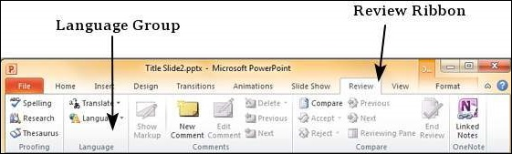
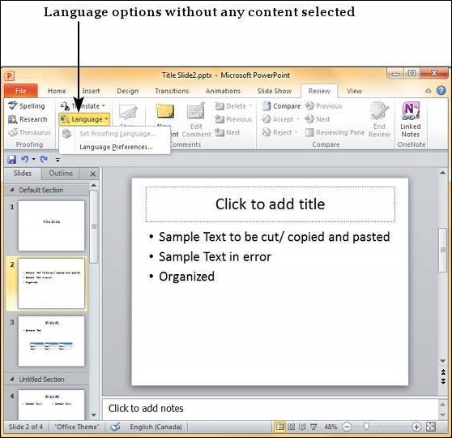
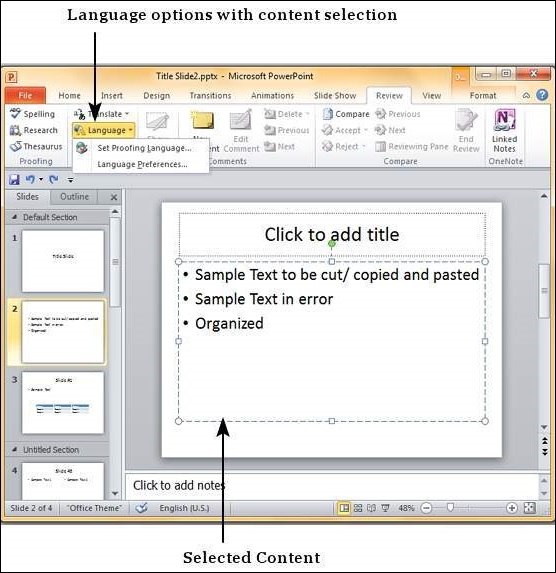
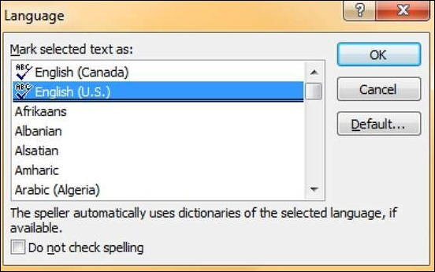
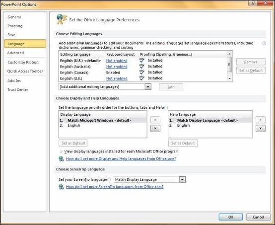

PowerPoint is a multi-lingual tool; it is evident that there will be an option to set the default language to be used in the slides. The following steps will help you set the language type in PowerPoint.
Step 1 − Under the Review ribbon, in the Language group, click on Language

Step 2 − If you have not selected any content, you will be able to just set the Language Preferences

Step 3 − If you have selected a portion of content with text in it, you can also set the proofing language.

Step 4 − When you select the "Set Proofing Language", you get the language dialog. Wherein, you can select one of the many languages available in PowerPoint. If you are selecting a language just for the selected text, click OK. If you are selecting a language for the entire presentation click Default. You can also check the "Do not check spelling" checkbox, if you do not want PowerPoint to automatically check for spelling errors based on dictionaries available.

Step 5 − When you select "Language Preferences", you get the PowerPoint Options dialog where you can change the language settings like loading dictionaries for various languages, prioritizing the display and help languages, and the Screen tip language setting.
